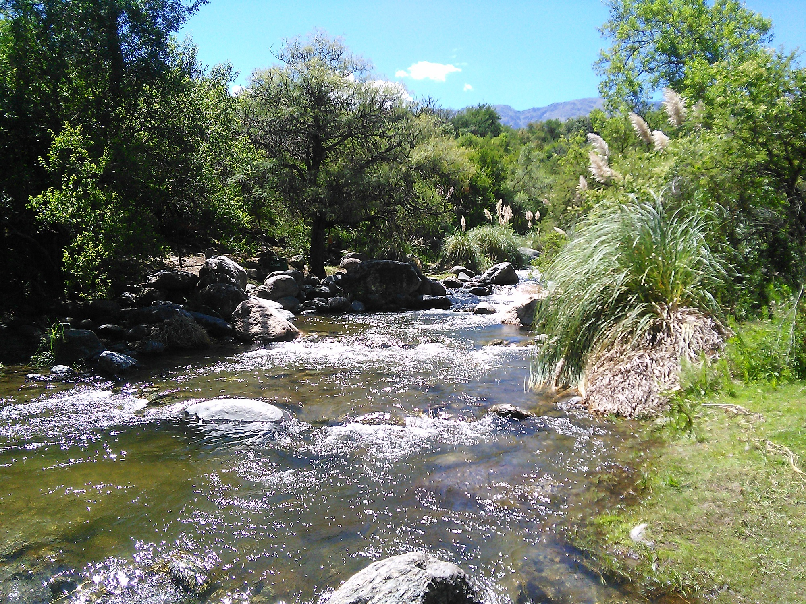
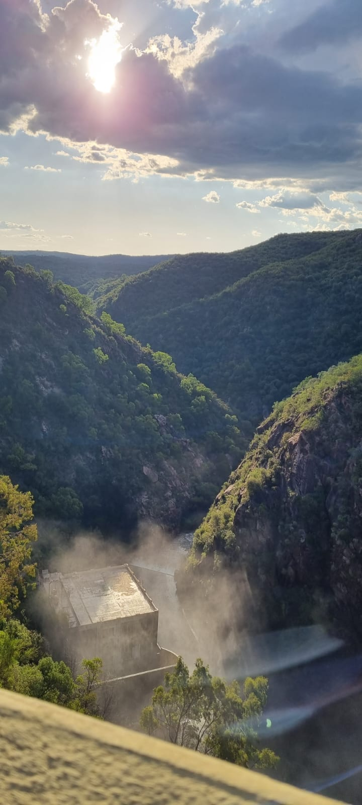
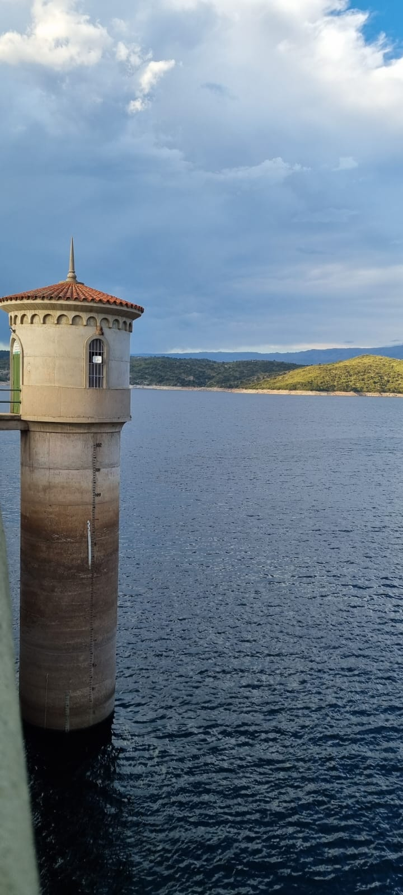
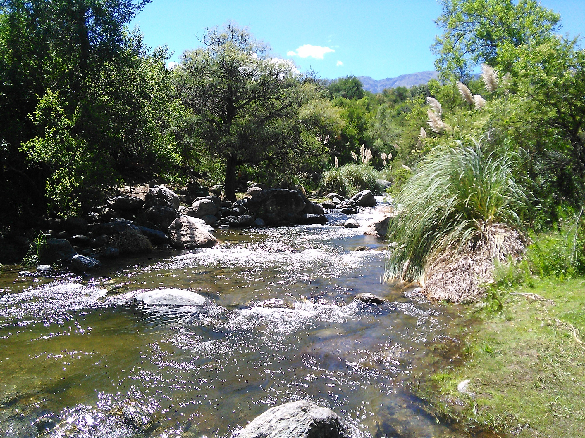
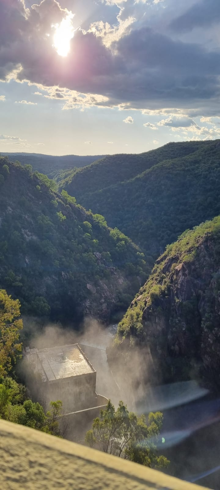
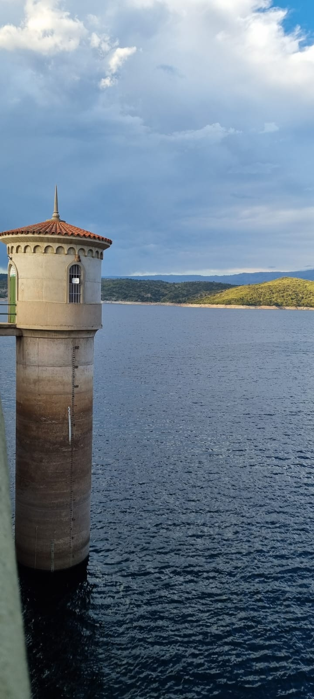

lugares que podes visitar
  
Luyaba es una localidad situada en el departamento San Javier, provincia de Córdoba, Argentina. Cómo llegar: si se desea ir en colectivo, se debe ir con la empresa Panaholma o Coata hasta Villa Dolores. Luego, es necesario el trasbordo hasta Luyaba, con buses de Grupo Sarmiento. En auto, es necesario tomar la RN 20 y luego seguir derecho por la RP 14. Pasando Yacanto y La Población se encuentra Luyaba.
  